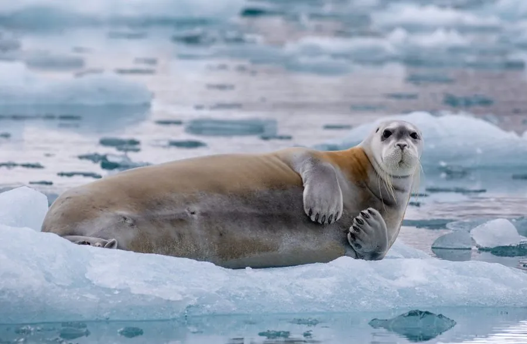

哺乳动物 · 动物界
髯海豹 Erignathus barbatus

北极海域的大型海豹，吻部密生浓密触须，形似一把大胡子，靠触须在泥沙中探测食物，能发出多种水下鸣声。
- 分类
- 门脊索动物门纲哺乳纲目食肉目科海豹科属髯海豹属
- 栖息环境
- 北冰洋及邻近海域的浮冰边缘、浅海陆架与河口
- 地理分布
- 环北极海域，包括白令海、楚科奇海、巴伦支海与加拿大北极水域
- 保护级别
- IUCN 无危（LC）；受气候变化与海冰退缩影响
物种志
髯海豹是北极海豹中体型较大的一种，成年体长 2.0–2.6 米，体重 200–430 千克，雌性略大于雄性。身体呈灰褐色至深褐色，背部和体侧常有锈色斑块；头部相对较小，吻部宽阔方形，最醒目的特征是吻两侧密集成簇的白色触须，湿水后贴在脸上像一大把胡子，因此得名“髯海豹”，也因吻部方正被称为方口海豹。
它们栖息于北冰洋的浮冰边缘与浅海陆架，多在 200 米以浅的水域活动，以底栖的虾、蟹、螺、蛤和底栖鱼类为食，靠敏感的触须在泥沙中探测猎物。髯海豹多独居，善潜水，可潜至数百米并持续十余分钟，繁殖期会发出一连串起伏的哨音和颤音，被称作“水下歌声”。雌兽在浮冰上产仔，每胎一仔，幼仔出生即能游泳。北极海冰减少正改变其栖息与觅食条件。
形态与习性
- 体长约 2.0–2.6 m
- 体重约 200–430 kg，雌性略大
- 食性底栖虾蟹、螺蛤、海参及鳕鱼等比目鱼类
- 潜水能力可潜至 300 m 以下，单次潜水超过 15 分钟
- 繁殖春季在浮冰上产仔，每胎一仔，哺乳期约 18–24 天
- 寿命约 25–30 年
- 发声繁殖期发出长串哨音与颤音，在水下可传数公里
趣味知识
- 髯海豹吻部两侧的触须又密又硬，湿水后像一把白胡子挂在脸上。
- 它在泥沙中觅食时不靠眼睛，而是用触须感知猎物搅动的水流。
- 雄性髯海豹的“水下歌声”由一连串下滑的哨音组成，可连续唱数分钟。